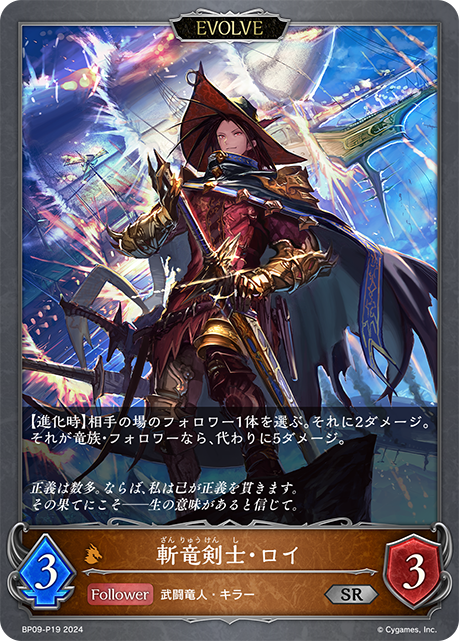
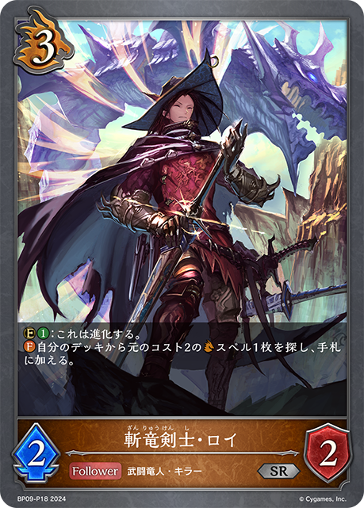

2 マルモリ
2/298｜2026/08/29
1W2YVJ
多了哪些牌
 +3
+3 +2
+2 +1
+1 +1
+1 +1
+1 +1
+1少了哪些牌
 -3
-3 -2
-2 -2
-2 -1
-1 -1
-1 主BP05-058/BP05-P27：侮蔑の炎爪主卡组 × 3
主BP05-058/BP05-P27：侮蔑の炎爪主卡组 × 3 主BP15-064/BP15-P13/PR-387：灯火の烈絶主卡组 × 2
主BP15-064/BP15-P13/PR-387：灯火の烈絶主卡组 × 2 主BP20-067/BP20-P35：侮蔑の国主卡组 × 3主BP01-098/PR-211：ブレイジングブレス主卡组 × 2主BP08-063/PR-202：侮蔑の狂信者主卡组 × 3
主BP20-067/BP20-P35：侮蔑の国主卡组 × 3主BP01-098/PR-211：ブレイジングブレス主卡组 × 2主BP08-063/PR-202：侮蔑の狂信者主卡组 × 3 主BP20-063/PR-553：蒼炎の猛威主卡组 × 3
主BP20-063/PR-553：蒼炎の猛威主卡组 × 3 主BP20-064/BP20-P33：侮蔑の祈祷者主卡组 × 3
主BP20-064/BP20-P33：侮蔑の祈祷者主卡组 × 3 主DSD01b-009/PR-010/PR-209/SD04-002/SD08-010：竜の託宣主卡组 × 3主BP05-055/BP05-P25：侮蔑の使徒主卡组 × 3
主DSD01b-009/PR-010/PR-209/SD04-002/SD08-010：竜の託宣主卡组 × 3主BP05-055/BP05-P25：侮蔑の使徒主卡组 × 3 主BP15-066/BP15-P14：烈絶の崇拝者主卡组 × 3
主BP15-066/BP15-P14：烈絶の崇拝者主卡组 × 3 主BP20-056/BP20-SL16/BP20-U05：烈絶の顕現・ガルミーユ主卡组 × 3
主BP20-056/BP20-SL16/BP20-U05：烈絶の顕現・ガルミーユ主卡组 × 3 主BP20-062/BP20-P32：侮蔑の団結者主卡组 × 3
主BP20-062/BP20-P32：侮蔑の団結者主卡组 × 3 主BP05-052/BP05-SL10/SP01-028/SP01-SL28/SP01-SP18/SP01-U16：侮蔑の絶傑・ガルミーユ主卡组 × 3
主BP05-052/BP05-SL10/SP01-028/SP01-SL28/SP01-SP18/SP01-U16：侮蔑の絶傑・ガルミーユ主卡组 × 3 主BP15-057/BP15-SL15/BP15-U04：烈絶の侮蔑・ガルミーユ主卡组 × 3
主BP15-057/BP15-SL15/BP15-U04：烈絶の侮蔑・ガルミーユ主卡组 × 3 进BP05-053/BP05-SL11/BP05-U04/SP01-029/SP01-SL29/SP01-SP19/SP01-U17：侮蔑の絶傑・ガルミーユ进化 × 3进BP05-056/BP05-P26：侮蔑の使徒进化 × 2进BP15-067/BP15-P15：烈絶の崇拝者进化 × 3
进BP05-053/BP05-SL11/BP05-U04/SP01-029/SP01-SL29/SP01-SP19/SP01-U17：侮蔑の絶傑・ガルミーユ进化 × 3进BP05-056/BP05-P26：侮蔑の使徒进化 × 2进BP15-067/BP15-P15：烈絶の崇拝者进化 × 3 进BP20-065/BP20-P34：侮蔑の祈祷者进化 × 2+3+2+1+1+1+1-3-2-2-1-1+2+2
进BP20-065/BP20-P34：侮蔑の祈祷者进化 × 2+3+2+1+1+1+1-3-2-2-1-1+2+2 +2+1-2-2-1-1-1+2+2+2+2+1-3-2-2-1-1+2+2+1-2-1-1-1+2+2+1-2-1-1-1+2+2+2+1-2-2-1-1-1+2+2+2+2-2-2-1-1-1-1+2+2+1+1+1-2-2-1-1-1+2+2+1-2-1-1-1+3+2+2+2+1-3-2-2-1-1-1+2+2+2-2-1-1-1-1+2+1+1+1-2-1-1-1+2+2+1+1-2-1-1-1-1+3+3+2+1+1-3-2-2-1-1-1+2+2+1-2-1-1-1+2+2+1+1-2-1-1-1-1+2+2+2+2+1-3-2-2-1-1+2+2+1+1+1-2-2-1-1-1+2+2+2+1-2-1-1-1-1-1+2+2+2+1-2-1-1-1-1-1+2+2+1+1+1-2-2-1-1-1+3+3+2+2+1-3-3-2-2-1+3+2+2+2+1-3-2-2-2-1+3+3+2-3-2-2-1+2+2+1+1-2-2-1-1+2+2+1-2-1-1-1+2+2+1-2-1-1-1+2+2+2+1+1+1-3-2-2-1-1+3+2+2+1+1-3-2-2-2+2+2+1-2-1-1-1+2+2+1-2-1-1-1+3+3+1-2-2-1-1-1+2+2+1+1-2-1-1-1-1+2+2+1+1+1-2-1-1-1-1-1+2+2+2-2-1-1-1-1+2+2+2+1-2-2-1-1-1+2+2+2+1-2-2-1-1-1+2+2+2+1-2-2-1-1-1+2+2+2+1-2-2-1-1-1+2+2+2+1+1-2-2-2-1-1+2+2+2+1+1+1-3-2-2-1-1+3+2+2-2-2-1-1-1+2+2+2+1+1-2-2-2-1-1+1+1+1+1-2-1-1+3-2-1+2+2+1+1+1-2-2-1-1-1+2+2+2+1+1+1-2-2-2-1-1-1+3+2+2+2+2+1+1-3-2-2-2-2-1-1+2+2+1+1+1-2-2-1-1-1+3+2+2+2+2-3-2-2-1-1-1-1+2+2+1-2-2-1+3+2+2+1+1-3-2-2-2+2+2+2+2-2-2-1-1-1-1+2+2+2+1+1+1-3-2-2-1-1+2+2+2+1+1+1+1-3-2-2-1-1-1+3+2+2+1+1-3-2-2-2+2+2+2+1+1+1-3-2-2-1-1+3+2+2+1+1+1-3-2-2-2-1+2+2+2+1+1+1+1-2-2-2-1-1-1-1+3+2+2+2+1-2-2-1-1-1-1-1-1+3+2+1+1-2-1-1+2+2+2+1-2-2-1-1-1+2+2+1-2-1-1-1+2+2+2+2+1-2-2-1-1-1-1-1+2+2+1+1+1+1-2-2-2-1-1+2+2+1-2-1-1-1+3+2+2+1-3-2-2-1+2+2+1+1-2-1-1-1-1+2+2+2+2+2+1+1-3-2-2-1-1-1-1-1+2+2+1+1+1-2-2-1-1-1+2+2+2+1-2-1-1-1-1-1+2+2+2+1+1+1-3-2-2-1-1+2+2+2+1+1-3-2-1-1-1+2+1+1+1+1-2-1-1-1-1+2+2+1-2-1-1-1+3+2+2+2+2-3-2-2-1-1-1-1+2+2+2+1+1+1-3-2-2-1-1+3+2+1-2-1-1-1-1+1+1+1+1+1+1+1-2-2-1-1-1+2+2+1-2-1-1-1+3+3+2+2+1-3-3-2-2-1+2+2+1+1-2-1-1-1-1+3+2+1-2-2-1-1+2+2+2-2-1-1-1-1+2+2+2+2+1+1-3-2-2-1-1-1+3+2+2+1+1+1+1-3-3-2-2-1+3+3+2+1+1+1-3-2-2-1-1-1-1+2+2+2+1+1-2-2-1-1-1-1+2+2+1-2-1-1-1+3+2+2+1+1+1+1-3-2-2-1-1-1-1+2+2+2+1-2-2-1-1-1+2+2+2+2+1+1-3-2-2-1-1-1+3+2+2+1-3-2-2-1+2+2+1-2-1-1-1+3+2+2+1+1-3-2-2-1-1+2+2+1+1+1-2-2-1-1-1+2+2+1-2-1-1-1+1+1+1-2-1+2+2+1+1-2-2-1-1+2+2+1-2-1-1-1+2+2+1+1-2-1-1-1-1+2+2+1-2-1-1-1+2+2+2+1-2-2-1-1-1+2+2+1+1-2-2-1-1+2+2+1-2-1-1-1+2+2+1-2-1-1-1+2+2+1-2-1-1-1+2+2+1+1-2-1-1-1-1+2+2+1-2-1-1-1+3+3+2-3-2-2-1+1+1+1+1+1+1+1-2-2-1-1-1+2+2+2+1+1-2-1-1-1-1-1+2+2+2+1+1+1-3-2-2-1-1+2+2+1-2-1-1-1+1+1
+2+1-2-2-1-1-1+2+2+2+2+1-3-2-2-1-1+2+2+1-2-1-1-1+2+2+1-2-1-1-1+2+2+2+1-2-2-1-1-1+2+2+2+2-2-2-1-1-1-1+2+2+1+1+1-2-2-1-1-1+2+2+1-2-1-1-1+3+2+2+2+1-3-2-2-1-1-1+2+2+2-2-1-1-1-1+2+1+1+1-2-1-1-1+2+2+1+1-2-1-1-1-1+3+3+2+1+1-3-2-2-1-1-1+2+2+1-2-1-1-1+2+2+1+1-2-1-1-1-1+2+2+2+2+1-3-2-2-1-1+2+2+1+1+1-2-2-1-1-1+2+2+2+1-2-1-1-1-1-1+2+2+2+1-2-1-1-1-1-1+2+2+1+1+1-2-2-1-1-1+3+3+2+2+1-3-3-2-2-1+3+2+2+2+1-3-2-2-2-1+3+3+2-3-2-2-1+2+2+1+1-2-2-1-1+2+2+1-2-1-1-1+2+2+1-2-1-1-1+2+2+2+1+1+1-3-2-2-1-1+3+2+2+1+1-3-2-2-2+2+2+1-2-1-1-1+2+2+1-2-1-1-1+3+3+1-2-2-1-1-1+2+2+1+1-2-1-1-1-1+2+2+1+1+1-2-1-1-1-1-1+2+2+2-2-1-1-1-1+2+2+2+1-2-2-1-1-1+2+2+2+1-2-2-1-1-1+2+2+2+1-2-2-1-1-1+2+2+2+1-2-2-1-1-1+2+2+2+1+1-2-2-2-1-1+2+2+2+1+1+1-3-2-2-1-1+3+2+2-2-2-1-1-1+2+2+2+1+1-2-2-2-1-1+1+1+1+1-2-1-1+3-2-1+2+2+1+1+1-2-2-1-1-1+2+2+2+1+1+1-2-2-2-1-1-1+3+2+2+2+2+1+1-3-2-2-2-2-1-1+2+2+1+1+1-2-2-1-1-1+3+2+2+2+2-3-2-2-1-1-1-1+2+2+1-2-2-1+3+2+2+1+1-3-2-2-2+2+2+2+2-2-2-1-1-1-1+2+2+2+1+1+1-3-2-2-1-1+2+2+2+1+1+1+1-3-2-2-1-1-1+3+2+2+1+1-3-2-2-2+2+2+2+1+1+1-3-2-2-1-1+3+2+2+1+1+1-3-2-2-2-1+2+2+2+1+1+1+1-2-2-2-1-1-1-1+3+2+2+2+1-2-2-1-1-1-1-1-1+3+2+1+1-2-1-1+2+2+2+1-2-2-1-1-1+2+2+1-2-1-1-1+2+2+2+2+1-2-2-1-1-1-1-1+2+2+1+1+1+1-2-2-2-1-1+2+2+1-2-1-1-1+3+2+2+1-3-2-2-1+2+2+1+1-2-1-1-1-1+2+2+2+2+2+1+1-3-2-2-1-1-1-1-1+2+2+1+1+1-2-2-1-1-1+2+2+2+1-2-1-1-1-1-1+2+2+2+1+1+1-3-2-2-1-1+2+2+2+1+1-3-2-1-1-1+2+1+1+1+1-2-1-1-1-1+2+2+1-2-1-1-1+3+2+2+2+2-3-2-2-1-1-1-1+2+2+2+1+1+1-3-2-2-1-1+3+2+1-2-1-1-1-1+1+1+1+1+1+1+1-2-2-1-1-1+2+2+1-2-1-1-1+3+3+2+2+1-3-3-2-2-1+2+2+1+1-2-1-1-1-1+3+2+1-2-2-1-1+2+2+2-2-1-1-1-1+2+2+2+2+1+1-3-2-2-1-1-1+3+2+2+1+1+1+1-3-3-2-2-1+3+3+2+1+1+1-3-2-2-1-1-1-1+2+2+2+1+1-2-2-1-1-1-1+2+2+1-2-1-1-1+3+2+2+1+1+1+1-3-2-2-1-1-1-1+2+2+2+1-2-2-1-1-1+2+2+2+2+1+1-3-2-2-1-1-1+3+2+2+1-3-2-2-1+2+2+1-2-1-1-1+3+2+2+1+1-3-2-2-1-1+2+2+1+1+1-2-2-1-1-1+2+2+1-2-1-1-1+1+1+1-2-1+2+2+1+1-2-2-1-1+2+2+1-2-1-1-1+2+2+1+1-2-1-1-1-1+2+2+1-2-1-1-1+2+2+2+1-2-2-1-1-1+2+2+1+1-2-2-1-1+2+2+1-2-1-1-1+2+2+1-2-1-1-1+2+2+1-2-1-1-1+2+2+1+1-2-1-1-1-1+2+2+1-2-1-1-1+3+3+2-3-2-2-1+1+1+1+1+1+1+1-2-2-1-1-1+2+2+2+1+1-2-1-1-1-1-1+2+2+2+1+1+1-3-2-2-1-1+2+2+1-2-1-1-1+1+1 +1+1-2-1-1+1+1+1-2-1+2+2+2+1-2-2-1-1-1+2+2+1-2-1-1-1+2+2+1+1-2-1-1-1-1+2+2+1+1+1-2-2-1-1-1+2+1+1-2-1-1+2+2+2+1+1+1-3-2-2-1-1+2+2+2+1+1+1-3-2-2-1-1+3+1+1+1-2-1-1-1-1+2+2+2+2+1-3-2-2-1-1+2+1+1+1+1+1-2-2-1-1-1+3+2+2+1+1+1-2-2-2-1-1-1-1+1+1+1-2-1+2+2+2+1-2-2-1-1-1+2+2+1-2-1-1-1+2+2+2+1-2-2-1-1-1+3+2+2+2+2+1-3-3-2-2-1-1+2+2+1+1+1-2-1-1-1-1-1+2+2+1-2-1-1-1+3+2+1+1-2-2-1-1-1+2+1+1+1-2-1-1-1+2+2+1-2-1-1-1+2+2+2+1-2-2-1-1-1+3+2+2+1+1+1-3-2-2-2-1+2+2+2+2+1+1-2-2-1-1-1-1-1+1+1+1+1+1+1-2-2-1-1+2+2+1-2-1-1-1+2+2+1+1+1-2-2-1-1-1+3+2+2+2+1-3-2-2-1-1+2+2+1-2-1-1-1+3+2+1+1+1+1-3-2-2-1-1+3+2+2+1+1+1+1-3-2-2-1-1-1-1+2+2+1-2-1-1-1+2+2+1-2-1-1-1+3+2+2+1+1+1-3-2-2-2-1+2+2+1+1+1-2-2-1-1-1+2+2+1+1+1+1+1-2-2-2-1-1-1+2+1+1-2-1-1+2+2+2+1-2-1-1-1-1-1+3+1+1-2-2-1+2+2+2+1+1+1-2-2-1-1-1-1-1+2+2+1-2-2-1+3+3+2+2+1-3-3-2-2-1+2+1+1+1-2-1-1-1+2+2+2+1+1+1-3-2-2-1-1+2+2+1+1+1+1-2-2-1-1-1-1+3+2+1-2-1-1-1-1+2+2+2+1-2-2-1-1-1+2+2+2+1-2-1-1-1-1-1+2+2+2+1+1-2-2-2-1-1+2+2+2+1+1+1-3-2-2-1-1+2+2+1-2-1-1-1+2+2+2+1+1+1-3-2-2-1-1+2+2+1+1+1-2-1-1-1-1-1+1+1+1+1+1+1-2-1-1-1-1+2+2+2+1-2-2-1-1-1+2+2+2-2-1-1-1-1+2+2+1+1+1+1-2-2-1-1-1-1+2+1-2-1+2+2+2+1+1-2-2-2-1-1+2+2+2+1-2-2-1-1-1+2+2+2+2+1-3-2-2-1-1+2+2+2+1-2-2-1-1-1+2+1+1+1-2-1-1-1+2+2+2+1-2-2-1-1-1+2+2+2+1-2-2-1-1-1+3+2+2-2-2-1-1-1+2+2+1-2-1-1-1+2+1+1-2-1-1+3+2+2+2+2+1-3-3-2-2-1-1+2+2+2+2+1-3-2-2-1-1+2+2+2+1-2-1-1-1-1-1+3+2+2+2+2+1-3-3-2-2-1-1+2+2+2+1-2-1-1-1-1-1+2+1-2-1+1+1+1+1-2-1-1+2+2+1+1-2-2-1-1+3+2+2+1+1-3-2-2-1-1+2+2+2+2-2-2-1-1-1-1+3+1+1+1-2-1-1-1-1+2+2+1+1+1-2-1-1-1-1-1+2+2+1-2-1-1-1+3+3+2+1-3-2-2-1-1+2+2+1+1+1-2-2-1-1-1+2+2+2-2-1-1-1-1+3+2+1-2-2-1-1+1+1+1+1+1+1-2-1-1-1-1+3+2+2+1+1+1+1-3-3-2-2-1+2+2+2+2+2+1+1-3-2-2-2-1-1-1+2+2+1+1+1-2-2-1-1-1+2+2+1-2-1-1-1+1+1+1-2-1+2+2+2+1-2-2-1-1-1+2+1-2-1+3+2+1-2-2-1-1+2+2+1+1-2-2-1-1+2+2+2+1-2-2-1-1-1+3+2+2+1-2-2-2-1-1+2+2+1-2-1-1-1+1+1-2+2+2+1+1+1-2-2-1-1-1+2+2+1-2-1-1-1+2+2+1-2-1-1-1+3+2+2+1+1-3-2-2-1-1+3+2+2+1+1+1+1-3-3-2-2-1+2+2+2+2
+1+1-2-1-1+1+1+1-2-1+2+2+2+1-2-2-1-1-1+2+2+1-2-1-1-1+2+2+1+1-2-1-1-1-1+2+2+1+1+1-2-2-1-1-1+2+1+1-2-1-1+2+2+2+1+1+1-3-2-2-1-1+2+2+2+1+1+1-3-2-2-1-1+3+1+1+1-2-1-1-1-1+2+2+2+2+1-3-2-2-1-1+2+1+1+1+1+1-2-2-1-1-1+3+2+2+1+1+1-2-2-2-1-1-1-1+1+1+1-2-1+2+2+2+1-2-2-1-1-1+2+2+1-2-1-1-1+2+2+2+1-2-2-1-1-1+3+2+2+2+2+1-3-3-2-2-1-1+2+2+1+1+1-2-1-1-1-1-1+2+2+1-2-1-1-1+3+2+1+1-2-2-1-1-1+2+1+1+1-2-1-1-1+2+2+1-2-1-1-1+2+2+2+1-2-2-1-1-1+3+2+2+1+1+1-3-2-2-2-1+2+2+2+2+1+1-2-2-1-1-1-1-1+1+1+1+1+1+1-2-2-1-1+2+2+1-2-1-1-1+2+2+1+1+1-2-2-1-1-1+3+2+2+2+1-3-2-2-1-1+2+2+1-2-1-1-1+3+2+1+1+1+1-3-2-2-1-1+3+2+2+1+1+1+1-3-2-2-1-1-1-1+2+2+1-2-1-1-1+2+2+1-2-1-1-1+3+2+2+1+1+1-3-2-2-2-1+2+2+1+1+1-2-2-1-1-1+2+2+1+1+1+1+1-2-2-2-1-1-1+2+1+1-2-1-1+2+2+2+1-2-1-1-1-1-1+3+1+1-2-2-1+2+2+2+1+1+1-2-2-1-1-1-1-1+2+2+1-2-2-1+3+3+2+2+1-3-3-2-2-1+2+1+1+1-2-1-1-1+2+2+2+1+1+1-3-2-2-1-1+2+2+1+1+1+1-2-2-1-1-1-1+3+2+1-2-1-1-1-1+2+2+2+1-2-2-1-1-1+2+2+2+1-2-1-1-1-1-1+2+2+2+1+1-2-2-2-1-1+2+2+2+1+1+1-3-2-2-1-1+2+2+1-2-1-1-1+2+2+2+1+1+1-3-2-2-1-1+2+2+1+1+1-2-1-1-1-1-1+1+1+1+1+1+1-2-1-1-1-1+2+2+2+1-2-2-1-1-1+2+2+2-2-1-1-1-1+2+2+1+1+1+1-2-2-1-1-1-1+2+1-2-1+2+2+2+1+1-2-2-2-1-1+2+2+2+1-2-2-1-1-1+2+2+2+2+1-3-2-2-1-1+2+2+2+1-2-2-1-1-1+2+1+1+1-2-1-1-1+2+2+2+1-2-2-1-1-1+2+2+2+1-2-2-1-1-1+3+2+2-2-2-1-1-1+2+2+1-2-1-1-1+2+1+1-2-1-1+3+2+2+2+2+1-3-3-2-2-1-1+2+2+2+2+1-3-2-2-1-1+2+2+2+1-2-1-1-1-1-1+3+2+2+2+2+1-3-3-2-2-1-1+2+2+2+1-2-1-1-1-1-1+2+1-2-1+1+1+1+1-2-1-1+2+2+1+1-2-2-1-1+3+2+2+1+1-3-2-2-1-1+2+2+2+2-2-2-1-1-1-1+3+1+1+1-2-1-1-1-1+2+2+1+1+1-2-1-1-1-1-1+2+2+1-2-1-1-1+3+3+2+1-3-2-2-1-1+2+2+1+1+1-2-2-1-1-1+2+2+2-2-1-1-1-1+3+2+1-2-2-1-1+1+1+1+1+1+1-2-1-1-1-1+3+2+2+1+1+1+1-3-3-2-2-1+2+2+2+2+2+1+1-3-2-2-2-1-1-1+2+2+1+1+1-2-2-1-1-1+2+2+1-2-1-1-1+1+1+1-2-1+2+2+2+1-2-2-1-1-1+2+1-2-1+3+2+1-2-2-1-1+2+2+1+1-2-2-1-1+2+2+2+1-2-2-1-1-1+3+2+2+1-2-2-2-1-1+2+2+1-2-1-1-1+1+1-2+2+2+1+1+1-2-2-1-1-1+2+2+1-2-1-1-1+2+2+1-2-1-1-1+3+2+2+1+1-3-2-2-1-1+3+2+2+1+1+1+1-3-3-2-2-1+2+2+2+2
+1+1
+1-2-1-1-1-1-1-1-1-1+3+2+1-2-2-1-1+2+2+2+1-2-2-1-1-1+2+1+1+1-2-1-1-1+2+2+2+1-2-2-1-1-1+3+2+1-2-2-1-1+3+2+1-2-2-1-1+2+2+2+1+1-2-2-2-1-1+2+2+2+1-2-2-1-1-1+2+2+1+1+1+1-2-2-1-1-1-1+1+1+1+1-2-1-1+3+2+1-2-2-1-1+3+2+2+2+2+1+1-3-3-2-2-2-1+2+2+2+1-2-1-1-1-1-1+3+2+2-2-1-1-1-1-1+2+2+2+2+1+1-3-2-2-1-1-1+2+2+1+1-2-2-1-1+3-2-1+2+2+2+1+1-2-2-2-1-1+2+2+2+1+1+1-3-2-2-1-1+2+2+2+1-2-2-1-1-1+2+2+2+1-2-2-1-1-1+2+2+2+2+2-3-2-2-1-1-1+3+2+1-2-2-1-1+2+2+1+1+1-2-2-1-1-1+2+2+1-2-1-1-1+1+1+1+1-2-1-1+3+2+1+1+1+1-3-2-2-1-1+3+2-2-2-1+2+2+2+2-2-2-1-1-1-1+2+2+1+1+1+1-2-2-1-1-1-1+2+2+1-2-1-1-1+2+2+2+2-2-2-1-1-1-1+2+2+1-2-1-1-1+1+1+1-2-1+2+2+2+1+1-3-2-2-1+2+2+1-1-1-1-1-1| 图片 | 平均张数 | 使用率 | 携带最好成绩 | 不携带最好成绩 | 1张比例 | 2张比例 | 3张比例 |
|---|---|---|---|---|---|---|---|
|
3.00 | 100.0% | 1 1/2984W3CR |
无 | 0.0% | 0.0% | 100.0% |
|
3.00 | 100.0% | 1 1/2984W3CR |
无 | 0.0% | 0.0% | 100.0% |
|
3.00 | 100.0% | 1 1/2984W3CR |
无 | 0.0% | 0.0% | 100.0% |
|
3.00 | 100.0% | 1 1/2984W3CR |
无 | 0.0% | 0.0% | 100.0% |
|
3.00 | 100.0% | 1 1/2984W3CR |
无 | 0.0% | 0.4% | 99.6% |
|
2.99 | 100.0% | 1 1/2984W3CR |
无 | 0.0% | 0.8% | 99.2% |
|
2.99 | 100.0% | 1 1/2984W3CR |
无 | 0.0% | 1.2% | 98.8% |
|
2.90 | 100.0% | 1 1/2984W3CR |
无 | 0.0% | 10.4% | 89.6% |
|
2.96 | 99.6% | 1 1/2984W3CR |
2 2/31NT00U |
0.0% | 3.1% | 96.5% |
|
2.83 | 98.8% | 1 1/2984W3CR |
11 11/2981H7CBN |
1.9% | 10.0% | 86.9% |
|
2.28 | 98.1% | 1 1/2984W3CR |
8 8/2981Q18SQ |
5.4% | 55.6% | 37.1% |
|
2.29 | 95.8% | 1 1/2984W3CR |
15 15/2981WB7RW |
8.9% | 40.5% | 46.3% |
|
0.98 | 82.2% | 2 2/2981W2YVJ |
1 1/2984W3CR |
67.2% | 14.7% | 0.4% |
|
1.34 | 77.2% | 1 1/2984W3CR |
2 2/2981W2YVJ |
30.9% | 36.3% | 10.0% |
|
1.31 | 63.3% | 2 2/2981W2YVJ |
1 1/2984W3CR |
6.9% | 44.8% | 11.6% |
|
1.00 | 59.8% | 2 2/2981W2YVJ |
1 1/2984W3CR |
21.2% | 37.1% | 1.5% |
|
1.07 | 52.9% | 2 2/2981W2YVJ |
1 1/2984W3CR |
10.8% | 30.1% | 12.0% |
|
0.07 | 4.2% | 3 3/298HPFAC |
1 1/2984W3CR |
1.9% | 2.3% | 0.0% |
|
0.03 | 1.9% | 1 1/2984W3CR |
2 2/2981W2YVJ |
0.4% | 1.5% | 0.0% |
| 0.00 | 0.4% | 6 6/11SWR5S |
1 1/2984W3CR |
0.4% | 0.0% | 0.0% | |
|
0.00 | 0.4% | 3 3/151XKQR |
1 1/2984W3CR |
0.4% | 0.0% | 0.0% |
| 图片 | 平均张数 | 使用率 | 携带最好成绩 | 不携带最好成绩 | 1张比例 | 2张比例 | 3张比例 |
|---|---|---|---|---|---|---|---|
|
2.64 | 100.0% | 1 1/2984W3CR |
无 | 0.0% | 36.3% | 63.7% |
|
2.05 | 100.0% | 1 1/2984W3CR |
无 | 2.7% | 89.6% | 7.7% |
|
1.96 | 99.6% | 1 1/2984W3CR |
2 2/31NT00U |
8.1% | 86.9% | 4.6% |
|
1.20 | 77.2% | 1 1/2984W3CR |
2 2/2981W2YVJ |
35.5% | 40.2% | 1.5% |
|
1.21 | 63.3% | 2 2/2981W2YVJ |
1 1/2984W3CR |
7.3% | 54.1% | 1.9% |
|
0.93 | 59.8% | 2 2/2981W2YVJ |
1 1/2984W3CR |
26.3% | 33.6% | 0.0% |
| 0.00 | 0.4% | 6 6/11SWR5S |
1 1/2984W3CR |
0.4% | 0.0% | 0.0% |